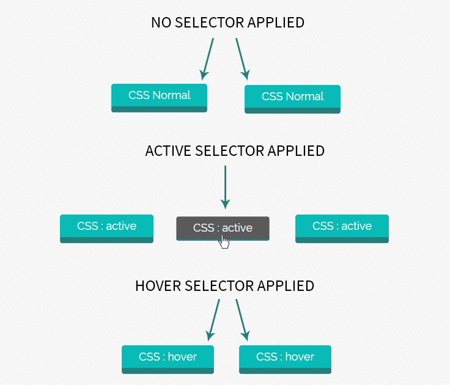
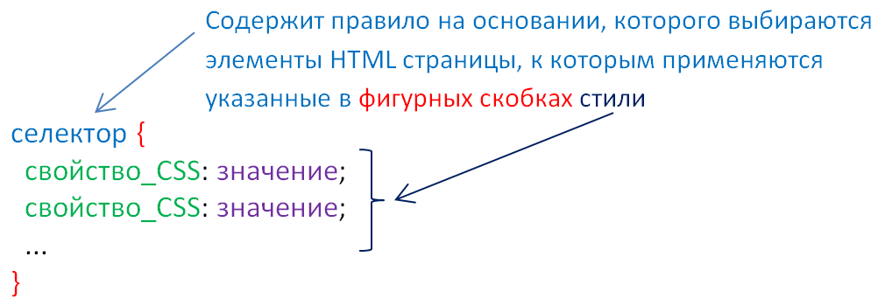

CSS
- CSS-ը html փաստաթղթերի ոճավորումը նկարագրող լեզու է.
- CSS հապավումը բացվում է որպես Cascading Style Sheets (կասկադային ոճաթերթեր).
- CSS նկարագրում է, թե ինչպես պիտի արտացոլվեն HTML էլեմենտները մոնիտորի վրա
- CSS-ով կարելի է միանգամից կառավարել բազմաթիվ էջերի ոճավորումը։ Սա շատ աշխատանք և ժամանակ է խնայում։
- Արտաքին ոճաթերթերը պահպանվում են CSS ֆայլերում
CSS նկարագրումը կազմված է ընտրիչից (selector) և սահմանման բլոկից։


- Ընտրիչը(selector) որոշում է այն HTML էլեմեները, որոնք ուզում ես ոճավորել։
- Սահմանման բլոկը պարունակում է մեկ կամ ավելի սահմանումներ, որոնք բաժանված են կետ-ստորակետ (;) նշանով
- Յուրաքանչյուր սահմանում ներառում է CSS հատկանիշի անունը և արժեքը՝ բաժանված վերջակետ (:) նշանով
- Սահմանման բլոկը պարփակված է ձևավոր փակագծերով․
HTML էլեմենտները CSS-ի միջոցով ընտրելու և ոճավորելու համար օգտագործվում են հետևյալ 3 ընտրիչները (selectors):
- tag-ի անունունով ընտրիչ (element selector)
- id ընտրիչ (id selector)
- class ընտրիչ (class selector)


CSS-ը օգտագործվում է վեբ-էջեր նախագծողների կողմից գույները, տառատեսակները, գտնվելու վայրը և այլ նկարագրություններ տալու համար։ CSS-ի հիմնական նպատակը հանդիսանում է այն, որ դրա օգնությամբ առանձնացվում են HTML էջի պարունակությունը և նրա նկարագրությունը, դրանով իսկ էջին հաղորդվում է մատչելիություն, ճկունություն և նրա նկարագրությունը կառավարելու հնարավորություն, ինչպես նաև նվազեցնում է հրամանների կրկնվելը և բարդացնելը։ Բացի այդ CSS-ը թույլ է տալիս տվյալ դոկումենտը ներկայացնել տարբեր ոճերով։ Էջի արտածման ժամանակ CSS-ը կարող է վերցվել տարբեր աղբյուրներից՝
Իսկ ես իսկապես հացկացա թե ինչ է CSS-ը, սովորեցի թե ինչես այն օգտագործել, ծանոթացա բազմաթիվ թեգերի, հատկանիշների, արժեքների հետ, սովորեցի էջը գեղեցիկ զարդարել, և ցույց տվեցի ձեզ թե ինպես եմ դա կատարում, սովորեցի թե ինչ է hover-ը և ինչպես այն օգտագործել: